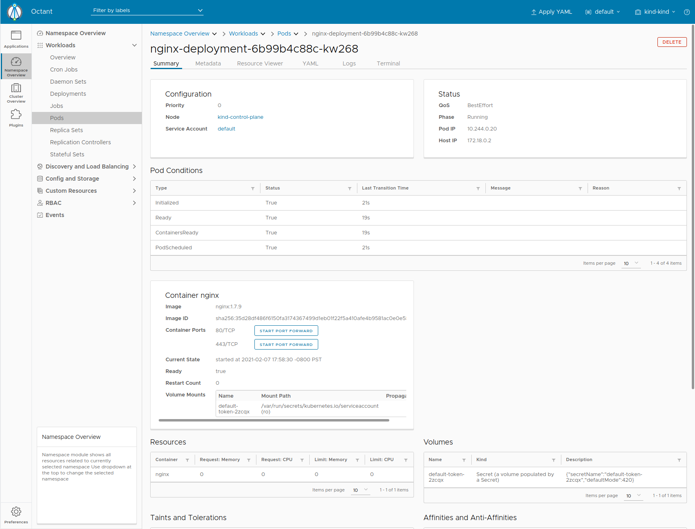

Port Forwarding

Port forwarding in Kubernetes is used to access a container running on a cluster usually for debugging purposes.
Navigating to one of the pods created by the nginx deployment earlier, the summary tab shows some basic information about our running.
Running kubectl get pod nginx-deployment-6b99b4c88c-kw268 (your pod will be sligntly different), we can see Octant provides a more formatted output and buttons for what someone in this step might potentially do.
Next to 80/TCP, click Start Port Forward and a new link should appear. That link should land on the nginx welcome page.
Going back to the terminal, run kubectl port-forward pods/nginx-deployment-6b99b4c88c-kw268 1234:80. Going to a browser and opening up http://localhost:1234 will show the landing page.
Forwarding from 127.0.0.1:1234 -> 80
Forwarding from [::1]:1234 -> 80
Handling connection for 1234
Octant helps the user avoid needing to know a verbose kubectl command and taking a few tries to get it correctly. It also generates a random port since it should not matter as long as it is accessible.